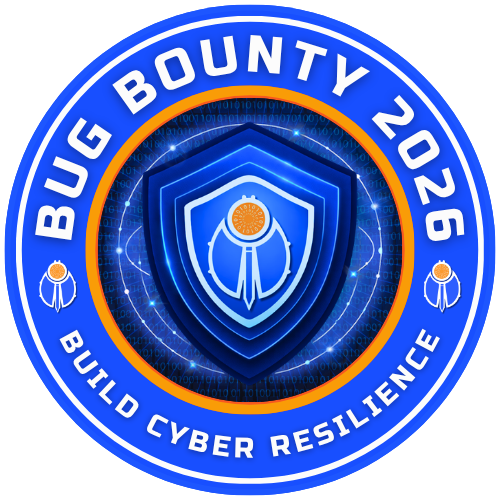
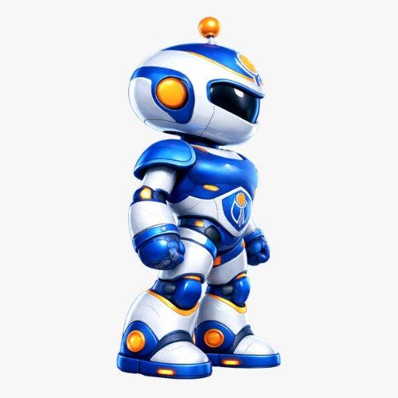
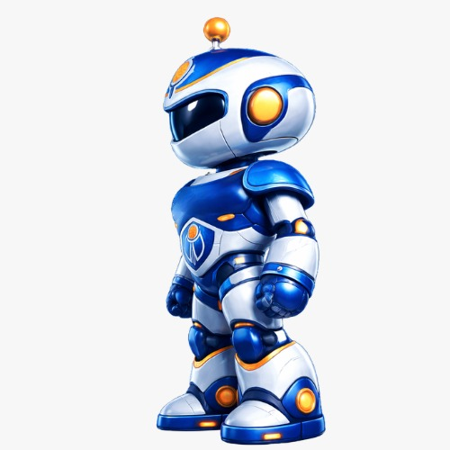
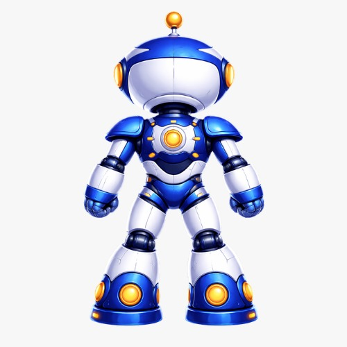
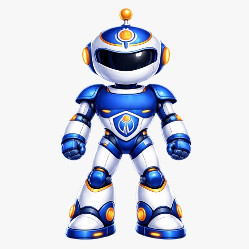

Bagian 2 dari 5
Kenali
musuhmu.
Peretas tidak menyerang sistem — mereka menyerang rasa percaya, rasa panik, dan rasa penasaran kita. Kalau kita tahu polanya, kita jauh lebih sulit ditipu.





Anomali trafik siber nasional terus meningkat — dan sekolah, guru, serta siswa termasuk sasaran yang paling sering dicoba.


Budaya keamanan siber adalah nilai, sikap, dan praktik yang membuat kita melindungi diri sebelum sistem. Tiga pilarnya: orang, proses, teknologi — dan keempatnya tidak akan jalan kalau kita sendiri tidak sadar.
